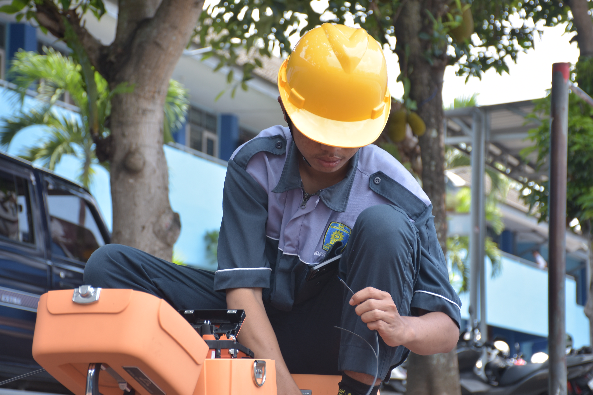
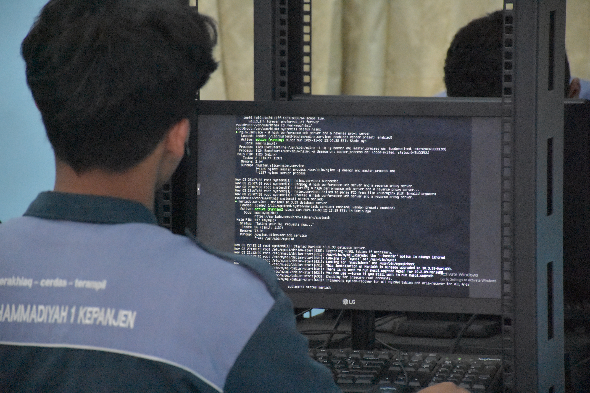
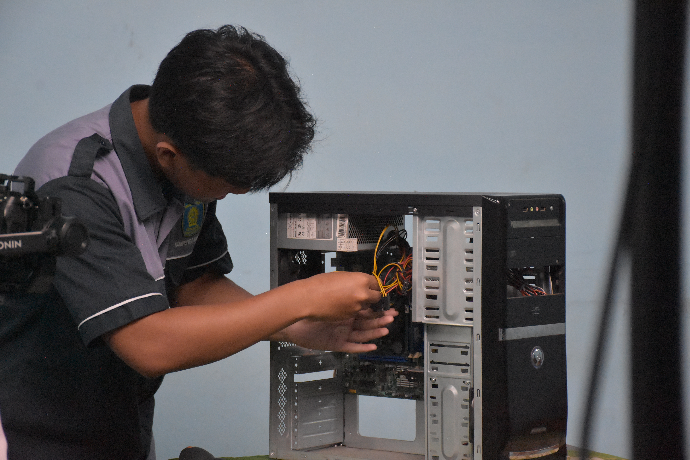

Dalam jurusan Teknik Komputer dan Jaringan (TKJ) MUSAKE siswa akan mempelajari konsep jaringan, membangun jaringan LAN dan WAN, mengkonfigurasi perangkat jaringan (Router, Switch) serta mengelola jaringan sesuai kebutuhan.

Splicing Kabel FO
Siswa TKJ MUSAKE juga dibekali dengan kompetensi keahlian di bidang jaringan internet fiber optik mencakup berbagai aspek, mulai dari dasar-dasar jaringan fiber optik hingga instalasi, pemeliharaan, dan penyambungan kabel.

Konfigurasi Server
TKJ MUSAKE siswa dibekali dengan kemampuan dibidang Administrasi Jaringan dimana Siswa TKJ diajarakan cara mengkonfigurasi dan menginstall sebuah server, layanan jaringan, dan keamanan sistem. Selain itu siswa juga belajar Pemrograman Dasar dan Pengembangan Web.

Proses Perakitan PC
Di Jurusan TKJ MUSAKE , kompetensi keahlian di bidang perakitan komputer meliputi pemahaman mendalam tentang komponen hardware, cara merakit komputer dengan benar, konfigurasi perangkat keras, dan instalasi sistem operasi. Siswa TKJ juga belajar tentang trouble shooting masalah hardware serta pemeliharaan sebuah komputer.